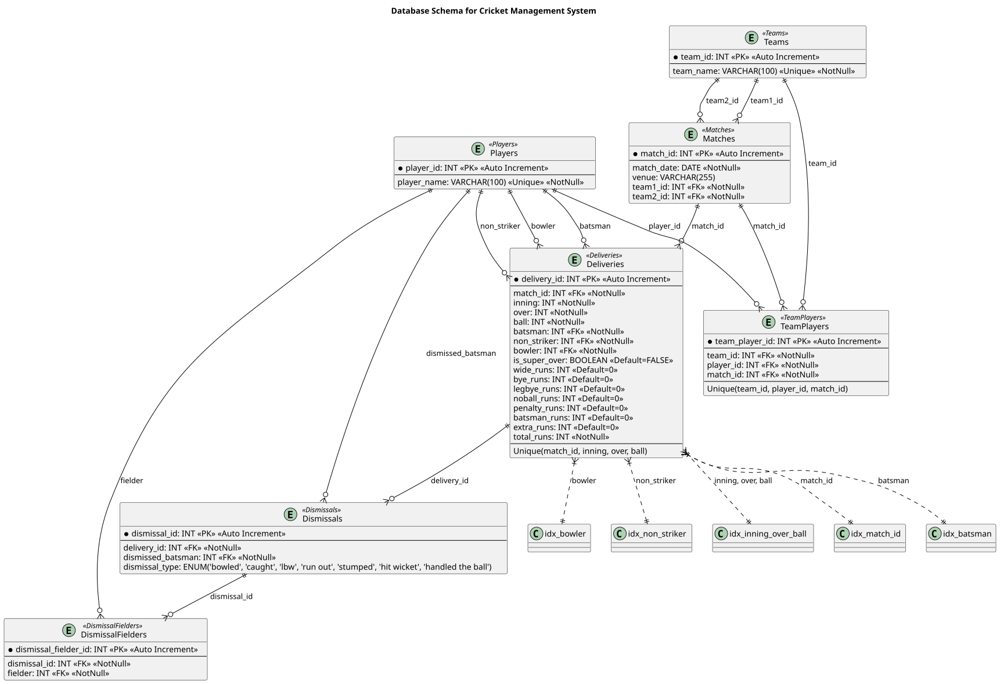

Design Specification Document for Cricket Match Database
1. Introduction
This document outlines the design and implementation details for a Cricket Match Database. The system is aimed at storing and managing comprehensive data related to cricket matches, teams, players, deliveries (balls), dismissals, and match statistics. The primary objective is to track matches, player performances, and other match events while ensuring data integrity, scalability, and performance optimization.
2. System Requirements
2.1 Functional Requirements
- Player Management: Ability to add, update, and delete player information.
- Team Management: Ability to add, update, and delete team information, including which players belong to which team.
- Match Tracking: Record match details, including date, venue, and participating teams.
- Delivery Tracking: Record detailed information about each delivery (ball), including batsman, bowler, and various runs.
- Dismissal Tracking: Track dismissals (wickets) and the type of dismissal.
- Query Support: Provide fast querying options, including searching by player, team, match, or delivery.
- Reporting: Generate reports for player and team performances, match summaries, and statistics.
2.2 Non-Functional Requirements
- Data Integrity: Ensure referential integrity between tables using foreign keys.
- Performance: Optimize queries for faster data retrieval, especially when dealing with large datasets.
- Scalability: The system should be able to handle a growing number of matches, players, and deliveries over time.
- Security: Ensure the database is secure and protected against unauthorized access.
3. Database Design
This database design tracks cricket matches, teams, players, and ball-by-ball details efficiently. The Players and Teams tables store basic information. The TeamPlayers table links players to teams for each match. The Matches table records games with two competing teams. Deliveries logs every ball, including runs and extras. Dismissals tracks how wickets fall, and DismissalFielders allows multiple fielders for run-outs. Foreign keys ensure data accuracy, and indexes improve search speed. This design avoids duplicate data, keeps match history, and supports player transfers between teams over time. It is well-structured, scalable, and useful for cricket analysis.

Strenghts of Design
The design follows good normalization principles, meaning the data is organized without redundancy. For example, the Players, Teams, and Matches tables are separate, ensuring each piece of information is stored in only one place. This makes the database easier to manage and update. Additionally, the TeamPlayers and MatchTeams tables create many-to-many relationships between players, teams, and matches. This means players can belong to multiple teams, and teams can play in multiple matches without repeating data.
Foreign keys help maintain the integrity of the data. They make sure that all the references between tables are correct. For example, a player_id in the TeamPlayers table can only refer to a valid player in the Players table. The use of ON DELETE CASCADE ensures that if a player or team is deleted, all their associated data in other tables (like matches or team memberships) will also be deleted automatically. This prevents orphaned or broken data.
Indexing helps speed up search queries, making it faster to find specific data in large tables. Indexes on columns like match_id, batsman, bowler, and non_striker allow quicker searches for match and player details. The unique constraint on the combination of match_id, inning, over, and ball ensures that no two deliveries are recorded the same, maintaining data accuracy and integrity.